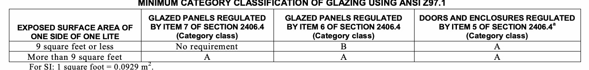

The provisions of this chapter shall govern the materials, design, construction and quality of glass, light transmitting ceramic and light-transmitting plastic panels for exterior and interior use in both vertical and sloped applications in buildings and structures.
The installation of replacement glass shall be as required for new installations. See Sections 28- 101.4.1, 28-101.4.2, 28-101.4.3 and 28-101.4.4 of the Administrative Code for requirements relating to prior code buildings.
The following words and terms shall, for the purposes of this chapter and as used elsewhere in this code, have the meanings shown herein.
DALLE GLASS. A decorative composite glazing material made of individual pieces of glass that are embedded in a cast matrix of concrete or epoxy.
DECORATIVE GLASS. A carved, leaded or Dalle glass or glazing material whose purpose is decorative or artistic, not functional; whose coloring, texture or other design qualities or components cannot be removed without destroying the glazing material and whose surface, or assembly into which it is incorporated, is divided into segments.
HOISTWAY. The hoistway is the opening through a building or structure for the travel of elevators, dumbwaiters, or material lifts, extending from the pit floor to the roof or floor above.
Each pane shall bear the manufacturer's label designating the type and thickness of the glass or glazing material. The identification shall not be omitted unless approved and an affidavit is furnished by the glazing contractor certifying that each light is glazed in accordance with approved construction documents that comply with the provisions of this chapter. Safety glazing shall be identified in accordance with Section 2406.3.
Each pane of tempered glass, except tempered spandrel glass, shall be permanently identified by the manufacturer. The identification label shall be acid etched, sand blasted, ceramic fired, laser etched embossed or shall be of a type that once applied cannot be removed without being destroyed. Tempered spandrel glass shall be provided with a removable paper marking by the manufacturer.
Where one or more sides of any pane of glass are not firmly supported, or are subjected to unusual load conditions, or as requested by the applicant, detailed construction documents, detailed shop drawings and analysis or test data assuring safe performance for the specific installation shall be prepared by an architect or engineer.
To be considered firmly supported, the framing members for each individual pane of glass shall be designed so the deflection of the edge of the glass perpendicular to the glass pane shall not exceed 1/175 of the glass edge length or ¾ inch (19.1 mm), whichever is less, when subjected to the larger of the positive or negative load where loads are combined as specified in Section 1605.
Where interior glazing is installed adjacent to a walking surface, the differential deflection of two adjacent unsupported edges shall not be greater than the thickness of the panels when a force of 50 pounds per linear foot (plf) (730 N/m) is applied horizontally to one panel at any point up to 42 inches (1067 mm) above the walking surface.
Float, wired and patterned glass in louvered windows and jalousies shall be no thinner than nominal 3/16 inch (4.8 mm) and no longer than 48 inches (1219 mm). Exposed glass edges shall be smooth. Wired glass with wire exposed on longitudinal edges shall not be used in louvered windows or jalousies. Where other glass types are used, the design shall be submitted to the department for approval.
GLASS
Glass sloped 15 degrees (0.26 rad) or less from vertical in windows, curtain walls and window walls, doors and other exterior applications shall be designed to resist the wind loads in Section 1609 for components and cladding. The load resistance of glass under uniform load shall be determined in accordance with ASTM E 1300 . Glass and glazing assemblies shall meet the seismic requirements of ASCE 7.
The design of vertical glazing shall be based on the following equation:
Fgw ≤ Fga (Equation 24-1)
where:
Fgw = Wind load on the glass computed in accordance with Section 1609.
Fga=Short duration load on the glass as determined in accordance with ASTM E 1300.
Glass sloped more than 15 degrees (0.26 rad) from vertical in skylights, sunrooms, sloped roofs and other exterior applications shall be designed to resist the most critical of the following combinations of loads.
Fg = Wo – D (Equation 24-2)
Fg = Wi+ D + 0.5S (Equation 24-3)
Fg=0.5 Wi+D+S (Equation 24-4)
where:
D = Glass dead load (kN/m2). For glass sloped 30 degrees (0.52 rad) or less from horizontal, = 13 tg (For SI: 0.0245 tg) For glass sloped more than 30 degrees (0.52 rad) from horizontal,
= 13 tg cos θ (For SI: 0.0245 tg cos θ).
Fg = Total load, psf (kN/m2) on glass.
S = Snow load, psf (kN/m2) as determined in Section 1608.
tg = Total glass thickness, inches (mm) of glass panes and plies.
Wi = Inward wind force, psf (kN/m2) as calculated in Section 1609.
Wo = Outward wind force, psf (kN/m2) as calculated in Section 1609. θ = Angle of slope from horizontal.
Exception: Unit skylights shall be designed in accordance with Section 2405.5.
The design of sloped glazing shall be based on the following equation: Fg< Fga (Equation 24-5)
where:
Fg = Total load on the glass determined from the load combinations above.
Fga = Short duration load resistance of the glass as determined according to ASTM E 1300 for Equations 24-2 and 24-3; or the long duration load resistance of the glass as determined according to ASTM E 1300 for Equation 24-4.
Wired glass sloped 15 degrees (0.26 rad) or less from vertical in windows, curtain and window walls, doors and other exterior applications shall be designed to resist the wind loads in Section 1609 for components and cladding according to the following equation: Fgw< 0.5 Fge (Equation 24-6)
where:
Fgw = Is the wind load on the glass computed per Section 1609.
Fge = Nonfactored load from ASTM E 1300 using a thickness designation for monolithic glass that is not greater than the thickness of wired glass.
Wired glass sloped more than 15 degrees (0.26 rad) from vertical in skylights, sunspaces, sloped roofs and other exterior applications shall be designed to resist the most critical of the combinations of loads from Section 2404.2. For Equations 24-2 and 24-3: Fg<0.5 Fge (Equation 24-7) For Equation 24-4: Fg<0.3 Fge (Equation 24-8)
where:
Fg = Total load on the glass.
Fge = Nonfactored load from ASTM E 1300.
Patterned glass sloped 15 degrees (0.26 rad) or less from vertical in windows, curtain and window walls, doors and other exterior applications shall be designed to resist the wind loads in Section 1609 for components and cladding according to the following equation: F gw< 1.0 Fge (Equation 24-9)
where:
Fgw = Wind load on the glass computed per Section 1609.
Fge = Nonfactored load from ASTM E 1300. The value for patterned glass shall be based on the thinnest part of the glass. Interpolation between nonfactored load charts in ASTM E 1300 shall be permitted.
Patterned glass sloped more than 15 degrees (0.26 rad) from vertical in skylights, sunspaces, sloped roofs and other exterior applications shall be designed to resist the most critical of the combinations of loads from Section 2404.2. For Equations 24-2 and 24-3: Fg< 1.0 Fge (Equation 24-10) For Equation 24-4: Fg< 0.6Fge (Equation 24-11) Where
Fg = Total load on the glass.
Fge= Nonfactored load from ASTM E 1300. The value for patterned glass shall be based on the thinnest part of the glass. Interpolation between the nonfactored load charts in ASTM E 1300 shall be permitted.
Sandblasted glass sloped 15 degrees (0.26 rad) or less from vertical in windows, curtain and window walls, doors, and other exterior applications shall be designed to resist the wind loads in Section 1609 for components and cladding according to the following equation: Fg< 0.5 Fge (Equation 24-12)
where:
Fg = Total load on the glass.
Fge= Nonfactored load from ASTM E 1300. The value for sandblasted glass is for moderate levels of sandblasting.
For designs outside the scope of this section, an analysis or test data for the specific installation shall be prepared by a registered design professional.
This section applies to the installation of glass and other transparent, translucent or opaque glazing material installed at a slope more than 15 degrees (0.26 rad) from the vertical plane, including glazing materials in skylights, roofs and sloped walls.
Glass installed in the walking surface of floors, landings, stairs and similar locations shall be designed and engineered by a registered design professional and the design shall include the applicable provisions of ASTM E 2751.
Sloped glazing shall be any of the following materials, subject to the listed limitations:
1. For monolithic glazing systems, the glazing material of the single light or layer shall be laminated glass with a minimum 30-mil (0.76 mm) polyvinyl butyral (or equivalent) interlayer, wired glass, light-transmitting plastic materials meeting the requirements of Section 2607, heat-strengthened glass or fully tempered glass.
2. For multiple-layer glazing systems, each light or layer shall consist of any of the glazing materials specified in Item 1 above. Annealed glass is permitted to be used as specified within Exceptions 2 and 3 of Section 2405.3. For additional requirements for plastic skylights, see Section 2610. Glass-block construction shall conform to the requirements of Section 2101.2.5.
Where used in monolithic glazing systems, heat-strengthened glass and fully tempered glass shall have screens installed below the glazing material. The screens and their fastenings shall: (1) be capable of supporting twice the weight of the glazing; (2) be firmly and substantially fastened to the framing members and (3) be installed within 4 inches (102 mm) of the glass. The screens shall be constructed of a noncombustible material not thinner than No. 12 B&S gage (0.0808 inch) with mesh not larger than 1 inch by 1 inch (25 mm by 25 mm). In a corrosive atmosphere, structurally equivalent noncorrosive screen materials shall be used. Heat-strengthened glass, fully tempered glass and wired glass, when used in multiple-layer glazing systems as the bottom glass layer over the walking surface, shall be equipped with screening that conforms to the requirements for monolithic glazing systems.
Exception: In monolithic and multiple-layer sloped glazing systems, the following applies:
1. Fully tempered glass installed without protective screens where glazed between intervening floors at a slope of 30 degrees (0.52 rad) or less from the vertical plane shall have the highest point of the glass 10 feet (3048 mm) or less above the walking surface.
2. Screens are not required below any glazing material, including annealed glass, where the walking surface below the glazing material is permanently protected from the risk of falling glass or the area below the glazing material is not a walking surface.
3. Any glazing material, including annealed glass, is permitted to be installed without screens in the sloped glazing systems of commercial or detached noncombustible greenhouses used exclusively for growing plants and not open to the public, provided that the height of the greenhouse at the ridge does not exceed 30 feet (9144 mm) above grade.
4. Screens shall not be required within individual dwelling units in Groups R-2 and R-3 where fully tempered glass is used as single glazing or as both panes in an insulating glass unit, and the following conditions are met: 4.1. Each pane of the glass is 16 square feet (1.5 m2) or less in area. 4.2. The highest point of the glass is 12 feet (3658 mm) or less above any walking surface or other accessible area.
4.3. The glass thickness is 3/16 inch (4.8 mm) or less.
5. Screens shall not be required for laminated glass with a 15-mil (0.38 mm) polyvinyl butyral (or equivalent) interlayer used within individual dwelling units in Groups R-2 and R-3 within the following limits: 5.1. Each pane of glass is 16 square feet (1 .5m2) or less in area. 5.2. The highest point of the glass is 12 feet (3658 mm) or less above a walking surface or other accessible area.
In Type I and II construction, sloped glazing and skylight frames shall be constructed of noncombustible materials. In structures where acid fumes deleterious to metal are incidental to the use of the buildings, approved pressure-treated wood or other approved noncorrosive materials are permitted to be used for sash and frames. Framing supporting sloped glazing and skylights shall be designed to resist the tributary roof loads in Chapter 16. Skylights set at an angle of less than 45 degrees (0.79 rad) from the horizontal plane shall be mounted at least 4 inches (102 mm) above the plane of the roof on a curb constructed as required for the frame. Skylights shall not be installed in the plane of the roof where the roof pitch is less than 45 degrees (0.79 rad) from the horizontal.
Exception: Installation of a skylight without a curb shall be permitted on roofs with a minimum slope of 14 degrees (three units vertical in 12 units horizontal) in Group R-3 occupancies. All unit skylights installed in a roof with a pitch flatter than 14 degrees (0.24 rad) shall be mounted at least 4 inches (102 mm) above the plane of the roof on a curb constructed as required for the frame unless otherwise specified in the manufacturer's installation instructions.
Unit skylights shall be tested and labeled as complying with AAMA/WDMA/CSA 101/I.S.2/A440 Voluntary Performance Specification for Windows, Skylights and Glass. The label shall state the name of the manufacturer, the approved agency, the product designation and the performance grade rating as specified in AAMA/WDMA/CSA 101/I.S.2/A440. If the product manufacturer has chosen to have the performance grade of the skylight rated separately for positive and negative design pressure, then the label shall state both performance grade ratings as specified in AAMA/WDMA/CSA 101/I.S.2/A440 and the skylight shall comply with Section 2405.5.2. If the skylight is not rated separately for positive and negative pressure, then the performance grade rating shown on the label shall be the performance grade rating determined in accordance with AAMA/WDMA/CSA 101/I.S.2/A440 for both positive and negative design pressure, and the skylight shall conform to Section 2405.5.1.
The design of unit skylights shall be based on the following equation: Fg ≤ PG (Equation 24-13)
where:
Fg = Maximum load on the skylight determined from Equations 24-2 through 24-4 in Section 2404.2.
PG = Performance grade rating of the skylight.
The design of unit skylights rated for performance grade for both positive and negative design pressures shall be based on the following equations:
Fgo ≤ PGNeg (Equation 24-15)
where:
PGPos = Performance grade rating of the skylight under positive design pressure,
PGNeg = Performance grade rating of the skylight under negative design pressure, and
Fgi andFgo are determined in accordance with the following:
For Wo ≥ D,
where:
Wo = Outward wind force, psf (kN/m2) as calculated in Section 1609.
D = The dead weight of the glazing, psf (kN/m2) as determined in Section 2404.2 for glass, or by the weight of the plastic, psf (kN/m2) for plastic glazing.
Fgi = Maximum load on the skylight determined from Equations 24-3 and 24-4 in Section 2404.2.
Fgo = Maximum load on the skylight determined from Equation 24-2.
For Wo < D,
where:
Wo = Outward wind force, psf (kN/m2) as calculated in Section 1609 .
D = The dead weight of the glazing, psf (kN/m2) as determined in Section 2404.2 for glass, or by the weight of the plastic for plastic glazing.
Fgi = Maximum load on the skylight determined from Equations 24-2 through 24-4 in Section 2404.2.
Fgo = 0.
Individual glazed areas, including glass mirrors, in hazardous locations as defined in Section 2406.4 shall comply with Sections 2406.1.1 through 2406.1.4.
Except as provided in Sections 2406.1.2 through 2406.1.4, all glazing shall pass the impact test requirements Section 2406.2.
Plastic glazing shall meet the weathering requirements of ANSI Z97.1.
Glass-block walls shall comply with Section 2101.2.5.
Louvered windows and jalousies shall comply with Section 2403.5.
Where required by other sections of this code, glazing shall be tested in accordance with CPSC 16 CFR 1201. Glazing shall comply with the test criteria for Category I or II as indicated in Table 2406.2(1).
Exception: Glazing not being used for doors or enclosures for hot tubs, whirlpools, saunas, steam rooms, bathtubs and showers shall be permitted to be tested in accordance with ANSI Z97.1. Glazing shall comply with the test criteria for Class A or B as indicated in Table 2406.2(2).
| EXPOSED SURFACE AREA OF ONE SIDE OF ONE LITE | GLAZING IN STORM OR COMBINATION DOORS (Category class) | GLAZING IN DOORS (Category class) | GLAZED PANELS REGULATED BY ITEM 7 OF SECTION 2406.4 (Category class) | GLAZED PANELS REGULATED BY ITEM 6 OF SECTION 2406.4 (Category class) | DOORS AND ENCLOSURES REGULATED BY ITEM 5 OF SECTION 2406.4 (Category class) | SLIDING GLASS DOORS PATIO TYPE (Category class) |
|---|---|---|---|---|---|---|
| 9 square feet or less | I | I | No requirement | I | II | II |
| More than 9 square feet | II | II | II | II | II | II |
For SI: 1 square foot = 0.0929 m2. TABLE 2406.2(2) MINIMUM CATEGORY CLASSIFICATION OF GLAZING USING ANSI Z97.1 GLAZED PANELS REGULATED GLAZED PANELS REGULATED DOORS AND ENCLOSURES REGULATED EXPOSED SURFACE AREA OF BY ITEM 7 OF SECTION 2406.4 BY ITEM 6 OF SECTION 2406.4 BY ITEM 5 OF SECTION 2406.4a ONE SIDE OF ONE LITE (Category class) (Category class) (Category class) 9 square feet or less No requirement B A More than 9 square feet A A A
For SI: 1 square foot = 0.0929 m2.
a. Use is only permitted by the exception to Section 2406.2.

Except as indicated in Section 2406.3.1, each pane of safety glazing installed in hazardous locations shall be identified by a label specifying the labeler, whether the manufacturer or installer, and the safety glazing standard with which it complies, as well as the information specified in Section 2403.1. A label as defined in Section 202 and meeting the requirements of this section shall be permitted in lieu of the manufacturer’s designation.
Exceptions:
1. For other than tempered glass, labels are not required, provided the department approves the use of a certificate, affidavit or other evidence confirming compliance with this code.
2. Tempered spandrel glass is permitted to be identified by the manufacturer with a removable paper label.
Multi-pane glazed assemblies having individual panes not exceeding 1 square foot (0.09 square meter) in exposed area shall have at least one pane in the assembly marked as indicated in Section 2406.3. Other panes in the assembly shall be marked CPSC 16 CFR 120 1 or ANSI Z97.1, as appropriate.
The following shall be considered specific hazardous locations requiring safety glazing materials:
1. Glazing in swinging doors except jalousies (see Section 2406.4.1).
2. Glazing in fixed and sliding panels of sliding door assemblies and panels in sliding and bifold closet door assemblies.
3. Glazing in storm doors.
4. Glazing in unframed swinging doors.
5. Glazing in doors and enclosures for hot tubs, whirlpools, saunas, steam rooms, bathtubs and showers. Glazing in any portion of a building wall enclosing these compartments where the bottom exposed edge of the glazing is less than 60 inches (1524 mm) above a standing surface.
6. Glazing in an individual fixed or operable panel adjacent to a door where the nearest exposed edge of the glazing is within a 24-inch (610 mm) arc of either vertical edge of the door in a closed position and where the bottom exposed edge of the glazing is less than 60 inches (1524 mm) above the walking surface.
Exceptions:
1. Panels where there is an intervening wall or other permanent barrier between the door and glazing.
2. Where access through the door is to a closet or storage area 3 feet (914 mm) or less in depth. Glazing in this application shall comply with Section 2406.4, Item 7.
3. Glazing in walls perpendicular to the plane of the door in a closed position, other than the wall towards which the door swings when opened in one- and two-family dwellings or within dwelling units in Group R-2.
7. Glazing in an individual fixed or operable panel, other than in those locations described in preceding Items 5 and 6, which meets all of the following conditions: 7.1. Exposed area of an individual pane greater than 9 square feet (0.84 m2); 7.2. Exposed bottom edge less than 18 inches (457 mm) above the floor; 7.3. Exposed top edge greater than 36 inches (914 mm) above the floor; and
7.4. One or more walking surface(s) within 36 inches (914 mm) horizontally of the plane of the glazing.
Exception: Safety glazing for Item 7 is not required for the following installations:
1. A horizontal protective bar 1½ inches (38 mm) or more in height, capable of withstanding a horizontal load of 50 pounds plf (730 N/m) without contacting the glass, is installed on the accessible sides of the glazing 34 inches to 38 inches (864 mm to 965 mm) above the floor.
2. The outboard pane in insulating glass units or multiple glazing where the bottom exposed edge of the glass is 25 feet (7620 mm) or more above any grade, roof, walking surface or other horizontal or sloped (within 45 degrees of horizontal) (0.78 rad) surface adjacent to the glass exterior.
8. Glazing in guards and railings, including structural baluster panels and nonstructural in-fill panels, regardless of area or height above a walking surface.
9. Glazing in walls and fences enclosing indoor and outdoor swimming pools, hot tubs and spas where all of the following conditions are present:
9.1. The bottom edge of the glazing on the pool or spa side is less than 60 inches (1524 mm) above a walking surface on the pool or spa side of the glazing; and
9.2. The glazing is within 60 inches (1524 mm) horizontally of the water's edge of a swimming pool or spa.
10. Glazing adjacent to stairways, landings and ramps within 36 inches (914 mm) horizontally of a walking surface; when the exposed surface of the glass is less than 60 inches (1524 mm) above the plane of the adjacent walking surface.
11. Glazing adjacent to stairways within 60 inches (1524 mm) horizontally of the bottom tread of a stairway in any direction when the exposed surface of the glass is less than 60 inches (1524 mm) above the nose of the tread.
Exception: Safety glazing for Item 10 or 11 is not required for the following installations where:
1. The side of a stairway, landing or ramp which has a guard or handrail, including balusters or in-fill panels, complying with the provisions of Sections 1013 and 1607.7; and
2. The plane of the glass is greater than 18 inches (457 mm) from the railing.
1. Openings in doors through which a 3-inch (76 mm) sphere is unable to pass.
2. Decorative glass in Section 2406.4, Item 1, 6 or 7.
3. Glazing materials used as curved glazed panels in revolving doors.
4. Commercial refrigerated cabinet glazed doors.
5. Glass-block panels complying with Section 2101.2.5.
6. Louvered windows and jalousies complying with the requirements of Section 2403.5.
7. Mirrors and other glass panels mounted or hung on a surface that provides a continuous backing support.
Fire department glass access panels shall be of nonlaminated tempered glass. For insulating glass units, all panes shall be nonlaminated tempered glass.
Exception: Fire department access panels that are openable and meeting size requirements of Section 903.2.11.1.
Glass used as structural balustrade panels in railings shall be constructed of either single fully tempered glass, laminated fully tempered glass or laminated heat-strengthened glass. Glazing in railing in-fill panels shall be of an approved safety glazing material that conforms to the provisions of Section 2406.1.1. For all glazing types, the minimum nominal thickness shall be 1/4 inch (6.4 mm). Fully tempered glass and laminated glass shall comply with Category II of CPSC 16 CFR 1201, listed in Chapter 35.
The panels and their support system shall be designed to withstand the loads specified in Section 1607.7. A safety factor of not less than four shall be used.
Each handrail or guard section shall be supported by a minimum of three glass balusters or shall be otherwise supported to remain in place should one baluster panel fail. Glass balusters shall not be installed without an attached handrail or guard.
Exception: A top rail shall not be required where the glass balusters are laminated glass with two or more glass plies of equal thickness and the same glass type when approved by the department. The panels shall be designed to withstand the loads specified in Section 1607.7.
Glazing materials shall not be installed in handrails or guards in parking garages except for pedestrian areas not exposed to impact from vehicles.
Glazing installed in in-fill panels or balusters in wind-borne debris regions shall comply with the following:
Glass installed in exterior railing in-fill panels or balusters shall be laminated glass complying with Category II of CPSC 16 CFR 1201 or Class A of ANSI Z97.1.
When the top rail is supported by glass, the assembly shall be tested according to the impact requirements of Section 1609.1.3. The top rail shall remain in place after impact.
Glazing in athletic facilities and similar uses subject to impact loads, which forms whole or partial wall sections or which is used as a door or part of a door, shall comply with this section.
Test methods and loads for individual glazed areas in racquetball and squash courts subject to impact loads shall conform to those of CPSC 16 CFR or ANSI Z97.1 listed in Chapter 35, with impacts being applied at a height of 59 inches (1499 mm) above the playing surface to an actual or simulated glass wall installation with fixtures, fittings and methods of assembly identical to those used in practice.
Glass walls shall comply with the following conditions:
1. A glass wall in a racquetball or squash court, or similar use subject to impact loads, shall remain intact following a test impact.
2. The deflection of such walls shall not be greater than 1½ inches (38 mm) at the point of impact for a drop height of 48 inches (1219 mm).
Glass doors shall comply with the following conditions:
1. Glass doors shall remain intact following a test impact at the prescribed height in the center of the door.
2. The relative deflection between the edge of a glass door and the adjacent wall shall not exceed the thickness of the wall plus ½ inch (12.7 mm) for a drop height of 48 inches (1219 mm).
Glazing in multipurpose gymnasiums, basketball courts and similar athletic facilities subject to human impact loads shall comply with Category II of CPSC 16 CFR 1201or Class A of ANSI Z97.1, listed in Chapter 35.
AND ELEVATOR CARS
Glass in elevator hoistway enclosures and hoistway doors shall be laminated glass conforming to ANSI Z97.1 or CPSC 16 CFR Part 1201 and ASME A17.1, as modified by Appendix K of this code.
Glass installed in hoistways and hoistway doors where the hoistway is required to have a fire-resistance rating shall also comply with Section 715.
The glass in glass hoistway doors shall be not less than 60 percent of the total visible door panel surface area as seen from the landing side.
Glass in vision panels in elevator hoistway doors shall be permitted to be any transparent glazing material not less than ¼ inches (6.4 mm) in thickness conforming to Class A in accordance with ANSI Z97.1 or Category II in accordance with CPSC 16 CFR Part 1201. The area of any single vision panel shall not be less than 12 square inches (0.008 m²), and the total area of one or more vision panels in any hoistway door shall be not more than 40 square inches (0.026 m²). See ASME A17.1, as modified by Appendix K of this code for additional requirements.
Glass in elevator car enclosures, glass elevator car doors and glass used for lining walls and ceilings of elevator cars shall be laminated glass conforming to Class A in accordance with ANSI Z97.1 or Category II in accordance with CPSC 16 CFR Part 1201. See ASME A17.1, as modified by Appendix K of this code for additional requirements.
Exception: Tempered glass shall be permitted to be used for lining walls and ceilings of elevator cars provided:
1. The glass is bonded to a nonpolymeric coating, sheeting or film backing having a physical integrity to hold the fragments when the glass breaks;
2. The glass is not subjected to further treatment such as sandblasting, etching, heat treatment or painting that could alter the original properties of the glass; and
3. The glass is tested to the acceptance criteria for laminated glass as specified for Class A in accordance with ANSI Z97.l or Category II in accordance with CPSC 16 CFR Part 1201.
The glass in glass elevator car doors shall be not less than 60 percent of the total visible door panel surface area as seen from the car side of the doors.
FIXED ADJACENT TRANSPARENT SIDELIGHTS
The following words and terms shall, for the purposes of this chapter and as used elsewhere in this code, have the meanings shown herein.
SIDELIGHTS. Fixed transparent panels which form part of or are immediately adjacent to and within 6 feet horizontally of the vertical edge of an opening in which transparent doors are located. A sidelight shall consist of transparent material in which the transparent area above a reference line 18 inches (457 mm) above the adjacent ground, floor or equivalent surface is 80 percent or more of the remaining area of the panel above such reference line.
TRANSPARENT. The property of a material which is not opaque and through which objects lying beyond are clearly visible.
TRANSPARENT DOOR. A door, manually or power actuated, fabricated of transparent material, in which the transparent area above a reference line 18 inches (457 mm) above the bottom edge of the door is 80 percent or more of the remaining area of the door above such reference line.
TRANSPARENT SAFETY GLAZING MATERIALS. Materials which will clearly transmit light and also minimize the possibility of cutting or piercing injuries resulting from breakage of the material. Materials covered by this definition include laminated glass, tempered glass (also known as heat-treated glass, heat-toughened glass, case-hardened glass or chemically tempered glass), wired glass, and plastic glazing.
Transparent doors and fixed adjacent sidelights shall be marked in accordance with Sections BC 2410.3 through 2410.5.
Exceptions:
1. One- and two-family dwellings.
2. Fixed adjacent transparent sidelights 20 inches (508 mm) or less in width with opaque stiles at least 1¾ inches (44 mm) in width.
3. Where the ground, floor or equivalent surface area in the path of approach to a fixed adjacent transparent sidelight from either side for a minimum distance of 3 feet (914 mm) from such sidelight is so arranged, constructed or designed as to deter persons from approaching such sidelight or a permanent barrier is installed in the path of approach, provided that:
3.1 Decorative pools, horticultural planting or similar installations shall be considered as indicating that the ground, floor or equivalent surface area is not a path of approach.
3.2 Planters, benches and similar barriers which are securely fastened to the floor or wall to prevent their removal shall be considered as blocking the path of approach provided they shall be not less than 18 inches (457 mm) in height from the ground, floor or equivalent surface and extend across at least 2/3 of the total width of the glazed area of the sidelight.
4. Fixed adjacent transparent sidelights which are supported by opaque sill and wall construction of at least 18 inches (457 mm) above the ground, floor or equivalent surface immediately adjacent.
5. Display windows in any establishment, building or structure which fall within the definition of a sidelight if the top of the supporting sill and wall construction is not less than 18 inches (457 mm) above the ground, floor or equivalent surface immediately adjacent and the interior area is occupied with merchandise or similar displays to clearly indicate to the public that it is not a means of ingress or egress.
6. Opaque door pulls or push bars extending across at least two-thirds of the total width of the glazed area.
Transparent doors and fixed adjacent transparent sidelights shall be marked in two areas on the glass surface. One such area shall be located at least 30 inches (762 mm) but not more than 36 inches (914 mm) above the ground, floor or equivalent surface below the door or sidelight and the other at least 60 inches (1524 mm) but not more than 66 inches (1676 mm) above the ground, floor or equivalent surface below the door or sidelight.
Exception: The use of horizontal separation bars, muntin bars or other equivalent bars at least one and 1½ inches (38 mm) in vertical dimension that extend across the total width of the glazed area and are located at least 40 inches (1016 mm) but not more than 50 inches (1270 mm) above the bottom of the door or sidelight is permitted in lieu of markings.
The marking design shall be at least 4 inches (102 mm) in diameter if circular or 4 inches (102 mm) in its least dimension if elliptical or polygonal, or shall be at least 12 inches (305 mm) in horizontal dimension if the marking is less than 4 inches (102 mm) in its least dimension. In no event shall the vertical dimension of any marking including lettering be less than 1½ inches (38 mm) in height.
Markings may be comprised of, but are not limited to:
1. Muntin bars, separation bars or other equivalent bars;
2. Chemical etching;
3. Sandblasting;
4. Adhesive strips;
5. Decals; or
6. Paint, gilding or other opaque marking materials.